Refill Call Goals
Send an email to the refill team, copying PV2 and supervisors, providing the refill call goals for the day. Additionally, include any remaining refill calls from previous days and remind the team to check the Refill Review queue and resolve any pending requests in WAM.
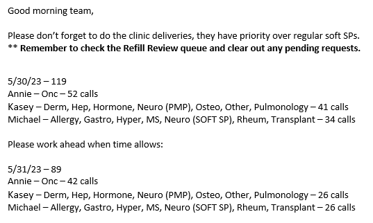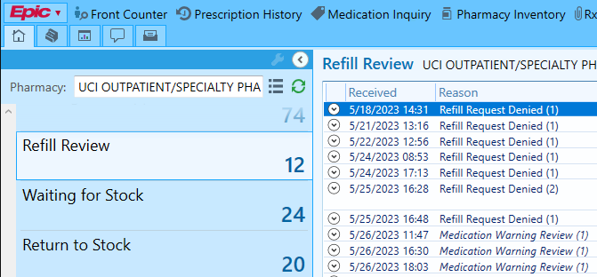
Shipping Dashboard
Count the DCS and FedEx shipments for the upcoming 5 business days from the WAM Shipping queue (custom queue), and update the numbers in the Excel spreadsheet available at the following link:
Delivery Shipments.xlsxSend a reminder in the Refill Team group chat on Teams to schedule the shipments evenly across the week instead of concentrating too much on any particular day.
Receiving Drop Ship
FedEx packages are delivered to Outpatient Pharmacy, while UPS packages are delivered to Inpatient Pharmacy. Drugs that are coming from Amerisourcebergen's alternative distribution center, the manufacturer (i.e. Ninlaro, Prevymis, drug replacements), and some third-party vendors (i.e. Aubagio from Optum Frontier Therapies) usually get delivered via UPS.
For any missing packages, check with Inpatient Pharmacy store room
staff and the dock. If the packages are not found, contact Infusion
Pharmacy and IDS pharmacy to see if they have received
our missing packages.
The tracking number can be accessed on the ABC Order website under
Ordering > Order History
 .
If the tracking number is not listed, reach out to Amerisourcebergen for
tracking assistance.
.
If the tracking number is not listed, reach out to Amerisourcebergen for
tracking assistance.
| Contact # | |
|---|---|
| Store Room | 456-5237 |
| Infusion Pharmacy | 456-5324 |
| IDS Pharmacy | 456-7833 |
| Amerisourcebergen | 844-222-2273 |
Updating Inventory
When scanning drugs into Epic Inventory, prioritize the ones that are pending from the FOA Fill on arrival area. Ensure that both the lot number and expiration date are recorded. Manually update the inventory for third-party vendor drugs and drugs that cannot be scanned into Epic. Include the quantity received, purchase order (PO) number, lot number, and expiration date in the comments.
Confirming Invoices
Confirm the invoices in Epic for the received drugs, and record the corresponding PO and invoice numbers on the Pharmacist Acceptance of Drop Shipment Order form (signed by the receiving pharmacist).
Scan T3 documents Packing slips that include the transaction history (TH), transaction information (TI), and transaction statement (TS). associated with drugs sourced from third-party vendors or directly from the manufacturer into the Shared Drive for uploading onto TraceLink.
Submit the invoices for approval on the ABC Order website, under
Receiving > Receive .
.

Once drop ship items are received, turn in the Pharmacist Acceptance of Drop Shipment Order form together with the packing slips to the supervisor.
Ordering Drop Ship
To ensure timely delivery, submit drop ship orders by 1 PM from Monday through Thursday. With the exception of urgent FOA orders, it is best to avoid submitting drop ship orders on Fridays to avoid potential delivery exceptions as the weekend approaches.
Drop ship drugs are identified in the ABC Order catalog with the DROPSHIP or the Ship separately label.

Requesting technicians place these drugs in a separate order draft in Epic labeled as SP Dropship.

Many drugs can be purchased from both the 340b and RAC accounts. However, certain drugs are exclusively available from the 340b account, requiring verification of 340b accumulation on Macro Helix. These exclusively 340b drugs can be identified in the ABC Order catalog by the absence of the RAC price tag.

Before submitting the order, check the drop ship FOA area to ensure that all FOA drugs have been included in the order draft. On Macro Helix, search each requested drug by NDC for any 340b accumulation. The number of accumulation represents the quantity of drug packages available for 340b purchase, and it is recalculated every 24 hours. Macro Helix will process any order quantity that exceeds the 340b accumulation through our RAC account.

While checking accumulations, make any necessary adjustments to the order quantity. Remember to check the drug shelves and the refrigerator for any shortages or overstocks. In urgent cases where FOA drugs cannot wait for 340b accumulations, they should be ordered through RAC, if available. If there is an opportunity for 340b cost saving, transfer the drug to a new drop ship draft and await the next recalculation of 340b accumulations. Not all patients are eligible for 340b, so it is important to cross-reference the recent encounter locations and the locations where prescriptions were written to confirm eligibility.
After reviewing the accumulations, click submit to transmit the order from Epic to ABC. Open the order in ABC and punch out to MacroHelix Direct .

Third-party Vendor Drugs
Update Quarterly Prices
At the beginning of each calendar quarter (January, April, July, and October), contact all third-party vendors to request updated prices for third-party drugs. These prices may include:
- 340B Acquisition Cost
- Retail Acquisition Cost (RAC)
- Wholesale Acquisition Cost (WAC)
- Average Wholesale Price (AWP)
- Suggested Wholesale Price (SWP)
- Group Purchasing Organization Price (GPO)
| Contact | ||||||
|---|---|---|---|---|---|---|
| Vendor | Account | Drug | Phone | Fax | ||
| Cardinal Health | 340B | 2052037380 | Nourianz | 800-926-3161 | -- | gmb-sps-prostrakan@cordlogistics.com |
| WAC | 2052037382 | |||||
| UC IRVINE OUTPATIENT PHARMACY | 2052037378 | |||||
| CuraScript SD | 340B | 92013 | Valchlor | 877-900-9223 | 866-628-8942 | wholesalefax@curascript.com |
| RAC | 92014 | |||||
| Direct Success | 340B | 353019 | Lysodren | 877-404-3338 | 855-674-6767 | distribution@dsuccess.com |
| WAC | ||||||
| Foundation Care | 340B | 7933577 | Iclusig | 833-291-2773 | 833-978-0054 | fcpiclusig@foundcare.com |
| WAC | ||||||
| Optum Frontier Therapies | 340B | A20536-4 | Aubagio | 855-768-9727 | 866-991-9929 | -- |
Update the team with the new prices for prescription processing.
Ordering
To purchase any third-party drugs, a purchase order (PO) number from administration is required. Frequently used drugs such as Aubagio and Iclusig have their own specific blanket PO numbers.
Technicians place requests for these drugs in the comments of the drop ship draft. When ordering, check if the drug will be ordered from the 340B or WAC accounts. Send an email to the administration staff, including Michael Vega and Diana Ornelas, and make sure to copy supervisors and the compliance officer. In the email, provide the drug name, NDC, quantity, vendor, account number, unit cost, total cost, and our cost center (7427173).
Once the PO number is received from administration, complete the order form and send it to the vendor via email or fax. Order forms and PO documents are in the Inventory > Third-Party Vendor Drop Ship Drugs folder within the Shared Drive.

TraceLink
To ensure complete traceability in the supply chain, it is necessary to input and upload T3 documents received from third-party vendors or manufacturers onto TraceLink. T3 documents include transaction history, transaction information, and transaction statement. Amerisourcebergen manages their own T3 documents on TraceLink.
Log in to TraceLink Classic.
Select MODULES > Compliance-US Product Track.
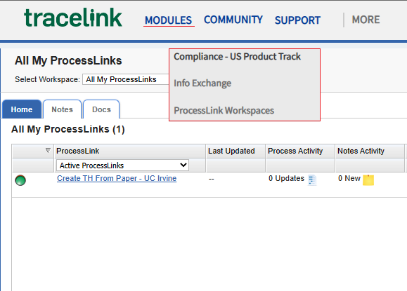Go to View Transaction Histories.
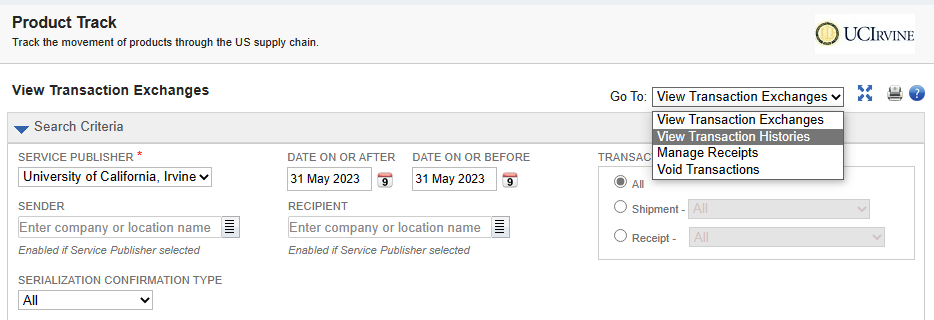Click on Create Transaction History for Received Paper
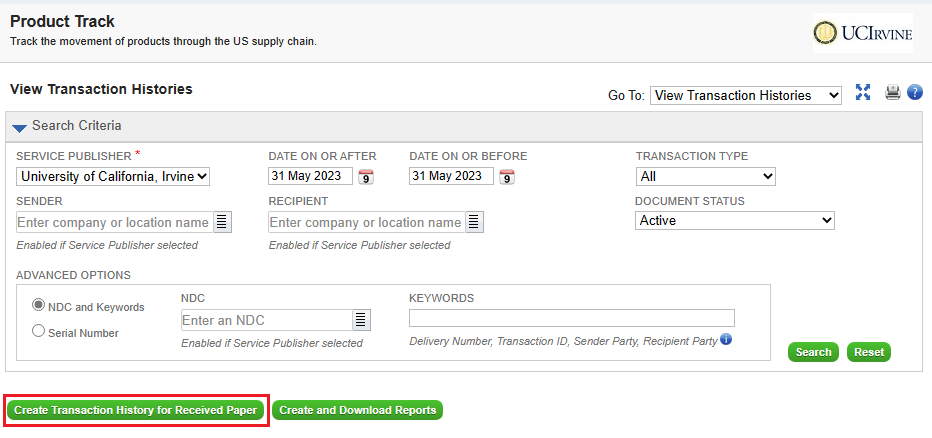Complete the fields, upload the T3 document, and then click Submit.
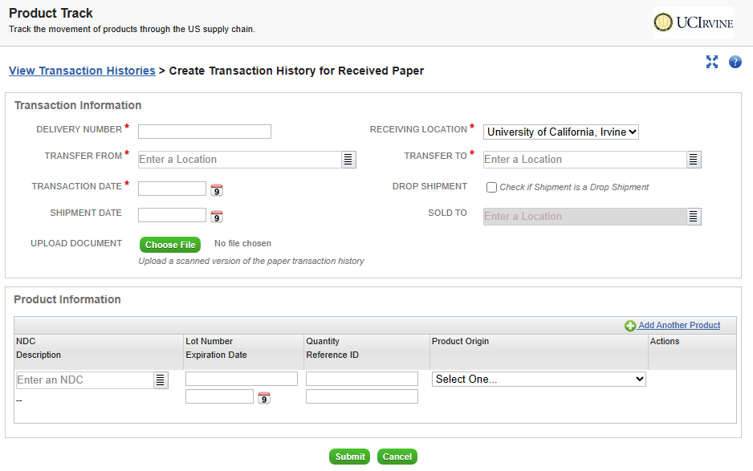Refill Reminder Calls
Loading the Report
- Open the UCI Willow Ambulatory Pharmacist & Technician Dashboard in Epic Hyperspace.
-
Run the Refill Coordination - All Diseases report and keep the report window open in the foreground.
Ensure the report window remains open during the loading process to avoid pausing the execution.
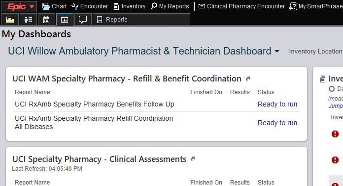 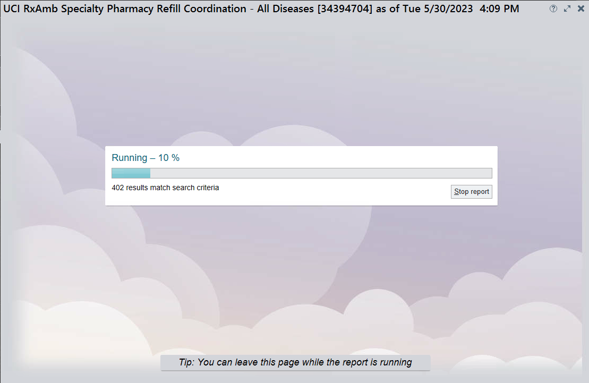 -
A second loading process will occur, and its progress can be seen at the bottom right corner.
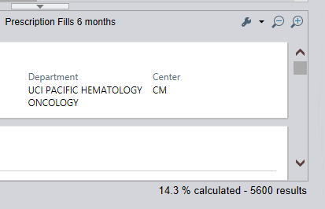 - Once the report is fully loaded, filter it by the "Next Refill Coordination" date and the "Enrolled Programs" mentioned in the Refill Call Goals email. 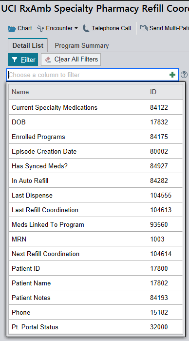
Processing Claims
Before contacting a patient for a refill, verify active insurance coverage by adjudicating the claim in Epic Willow Ambulatory (WAM). Remove the Ready At time located at the bottom right corner in WAM. This will separate specialty medications from outpatient medications by moving the fill to the bottom of the Ready to Fill queue.
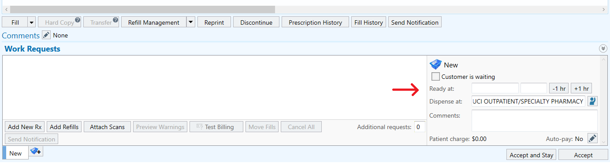For unresolved rejected claims, see the next section on how to document in the Specialty Pharmacy Encounter.
Specialty Pharmacy Encounters
Refill notes, clinical reassessments (RA), MyChart communications, and future follow-up
coordinations occur in Epic Hyperspace's Specialty Pharmacy Encounter. From the Refill Coordination report, right-click on the
patient and select 'Encounter.'
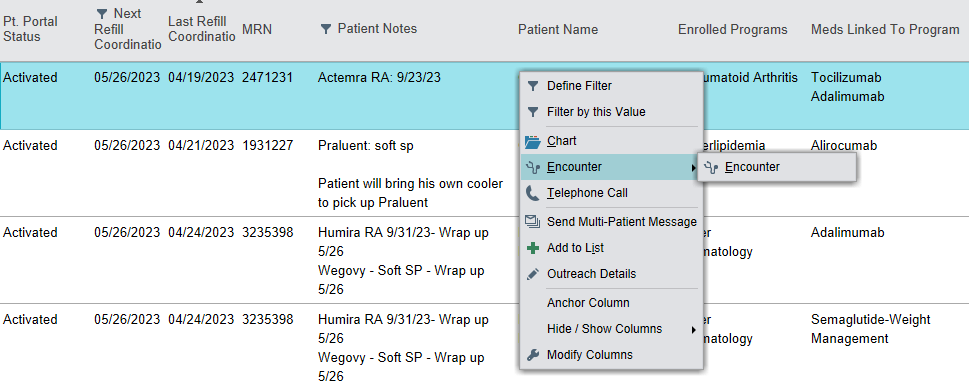
A window will appear, displaying a list of open encounters
at the medical center. Check if a Specialty Pharmacy Encounter has already
been created for this month's fill.
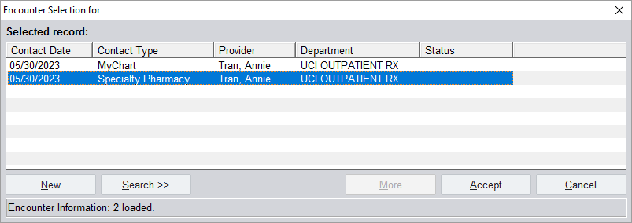
Open the encounter if it exists, or
create a new encounter by clicking New and selecting 'Specialty Pharmacy'.
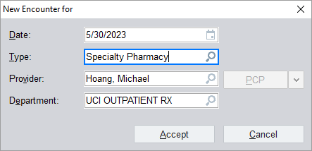
Progress Notes
Document all pharmacy tasks related to the patient's medication fill in the Progress Notes. Some tasks include:
- insurance rejection
- conversation with the patient
- sending MyChart message
- leaving voice mail
- refill coordination
- clinical reassessment
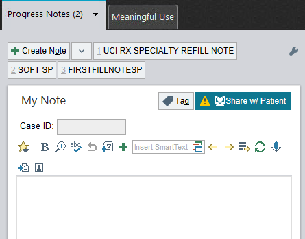
Specialty Pharmacy Tab
The Specialty Pharmacy tab is used to monitor adherence, update the medication
and allergies list, document Drug Utilization Review (DUR), symptoms, and interventions, track patient
financial savings, and record patient quality of life. Fill out the
Specialty Pharmacy tab after scheduling a refill or completing a clinical reassessment.
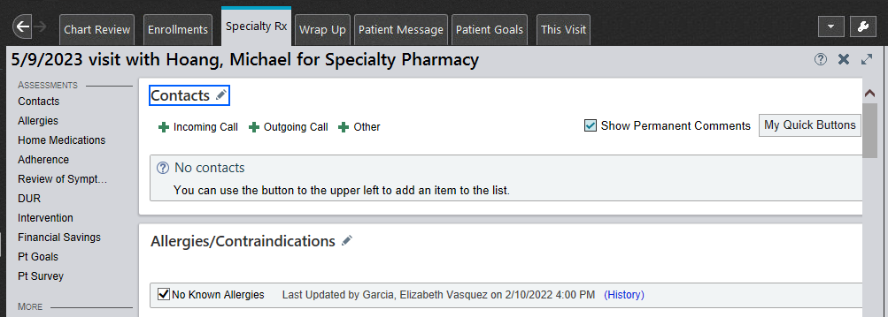
Wrap Up Tab
The Wrap Up tab is used for scheduling future follow-ups. Make
sure to always select the Refill Coordination checkbox and have a
follow-up date. The patient will not populate in the Refill Coordination
report if any of these parameters are missing. Also select the Clinical
Reassessment checkbox if it was completed for this encounter.
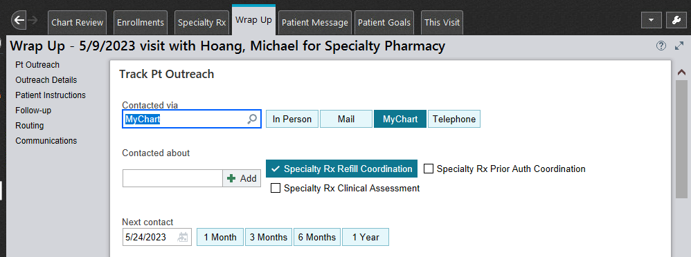
Enrollment Tab
Patients are enrolled in the management program through the Enrollment tab.
Enrollments take place during the First Fill Review, while disenrollments
occur when patients no longer receive our services. It's advisable to confirm patient's
enrollment before scheduling the next follow-up, particularly for
returning patients who have resumed using our services.
Disenrolled patients will not appear on the Refill Coordination report.
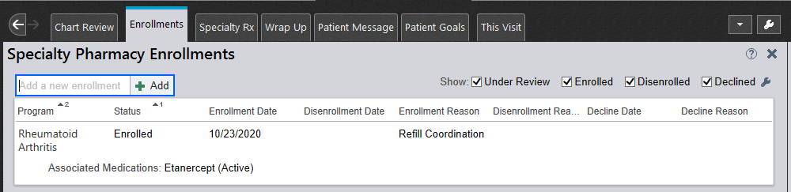
Only sign encounters if no additional follow-ups are needed for the current month's fill
(completing refill coordination without needing an intervention for a patient).
Encounters that are pending patient contact, need a pharmacist's intervention,
or require a clinical reassessment should not be signed. A pharmacist will
review and sign the encounter for interventions or clinical reassessments
during verification.
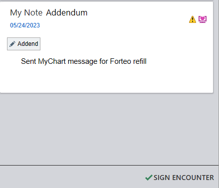
Scheduling Refills
Prior to contacting the patient for refills, check the patient notes on the refill report and pharmacy notes in the patient's WAM profile for the reassessment (RA) due date and any other relevant information relating to the patient. Additionally, verify if the patient is enrolled to receive MyChart messages. Follow the patient outreach diagram provided below for specialty and soft specialty medications.
Specialty (Category A, PMP, True Specialty)
Up to six attempts will be made to contact the patient. If the patient is enrolled in MyChart, alternate between sending MyChart messages and making phone calls. In case reaching the patient remains unsuccessful after the sixth attempt, remove the wrap-up date and escalate the encounter to the clinical pharmacist due to noncompliance.
If the patient is not opted out of the patient management program (PMP), screen the patient during the refill call for the following:
- Days supply on hand/next injection due date/next cycle start date
- Changes to the current medication (direction/dose)
- Changes to the patient's medication profile (new medications/discontinued medications)
- New allergies
- Side-effects
- Medication efficacy (working a little, a lot, can't tell)
- Adherence (missed/late doses)
- Quality of life (1-10 best)
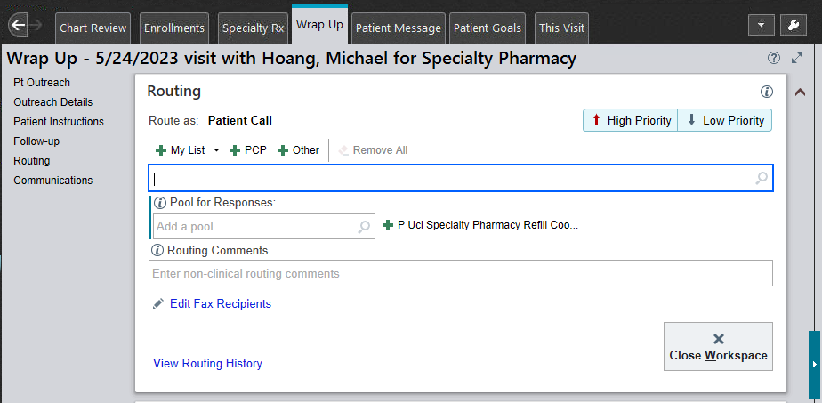
Soft Specialty (Category B)
The patient will be contacted up to three times. Use the smart texts ".SOFTSPLASTMYCHART" for the final MyChart message and ".SOFTSPLASTNOTE" for the final progress note.
Shipping
We offer two shipping services: DCS for Orange County deliveries and FedEx Express for deliveries outside Orange County. No deliveries occur on weekends or holidays, and we do not ship out of state. Refer to the provided tables when scheduling a delivery.
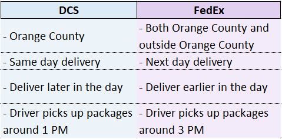 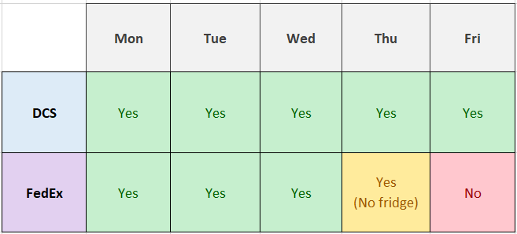
Include the Mail Order flag in WAM with the ship date.
If the patient has Medicare Part B or Humana Part D insurance, a signature is mandatory for the delivery.
Pick Up
Ask for the date and time if the patient is picking up. Check with the pharmacist (PV2) if the patient wants to pick up on the weekend.
After Scheduling
Restock the medication by adding the NDC in the specialty inventory draft. Print and fill out the Call Slip to serve as the cover sheet for your order basket. 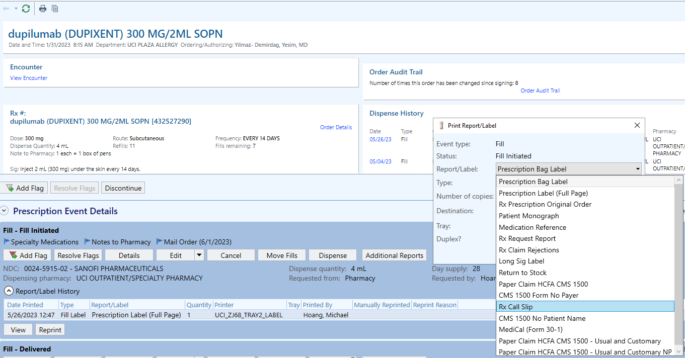